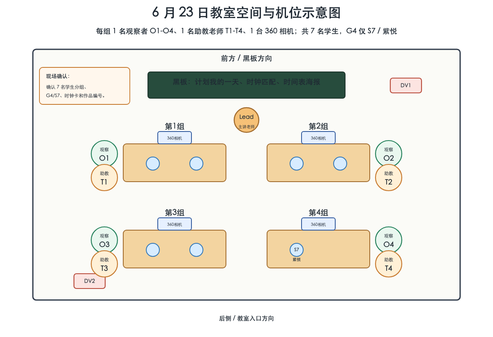
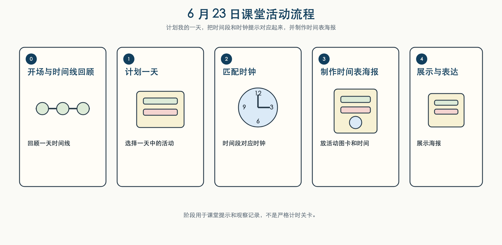

活动主题： 计划我的一天：把时间段和时钟对应起来 时间： 2026 年 6 月 23 日 对象： 数学美社老师、助教老师、7 名参与学生 时长： 约 30 分钟
本次工作坊延续一天时间线主题，把时间段进一步和时钟上的时间联系起来。学生先回顾一天中的时间顺序，再把上午、中午、下午或晚上等时间段和时钟提示进行匹配，最后制作“我的一天”时间表海报。活动重点是通过材料、图卡、时钟和海报帮助学生表达日常安排，而不是要求学生完成统一答案。
主要目标：
| 材料类别 | 具体材料 | 用途 | 课堂关注点 |
|---|---|---|---|
| 时间线材料 | 一天时间线、上午 / 中午 / 下午 / 晚上提示卡 | 帮助学生组织一天顺序 | 是否能指认、匹配、移动或回应时间段 |
| 时钟材料 | 可移动指针时钟、整点时钟卡、时间段匹配卡 | 把时间段和时钟位置联系起来 | 指针方向、整点匹配、是否需要协助 |
| 海报材料 | 海报底纸、活动图卡、贴纸、照片或图标 | 制作“我的一天”时间表海报 | 选择活动、排序、放置、补充或替换 |
| 触觉材料 | 毛根、橡皮泥、海绵、布料、贴纸或其他安全触觉材料 | 做时间段分隔、重点标记或装饰 | 触摸、按压、揉捏、重复、回避、替换 |
| 固定和标记材料 | 胶棒、双面胶、彩色笔、粗线笔 | 固定图卡、写时间、装饰海报 | 是否能等待、继续、请求帮助或调整 |
建议每组桌面先放少量材料，备用材料由老师统一管理。材料不做编号；只在作品收集时给学生作品贴编号。

图示说明：沿用前两周课堂设置。每组有一张小组桌、一台 360 相机、一名观察者和一名助教老师。观察者标记为 O1-O4；助教老师标记为 T1-T4；前方主讲老师标记为 Lead Teacher。观察者主要记录课堂现象，助教老师主要支持学生完成活动。学生使用 7 人分组记录；第四组只有当前 S7一名学生，之前的 S7 / former participant信息不再作为当前 setup 使用。若原始文件名或归档路径中仍出现 S8，应作为历史原始标签理解为当前 S7。

本次活动的主线是“计划我的一天，并把时间段和时钟提示对应起来”。阶段用于课堂提示和观察记录，不是严格计时关卡。
| 阶段 | 名称 | 课堂重点 |
|---|---|---|
| 0 | 开场与时间线回顾 | 回顾一天时间线，知道今天要做“我的一天”时间表海报。 |
| 1 | 计划一天 | 选择一天中的活动，讨论这些活动发生在什么时间段。 |
| 2 | 匹配时钟 | 把时间段和时钟上的整点或时间提示进行匹配。 |
| 3 | 制作时间表海报 | 把活动图卡、时间段、时钟提示和触觉材料放到海报上。 |
| 4 | 展示与表达 | 展示自己的海报，表达完成、继续、更换、帮助、暂停或停止。 |
| 勾选 | 类别 | 简要记录内容 |
|---|---|---|
| □ | 课堂信息 | 日期、时间、地点、7 名学生分组、教师人数 |
| □ | 学生参与 | 参与、等待、求助、离开任务、返回任务、完成 |
| □ | 时间段匹配 | 上午 / 中午 / 下午 / 晚上与时钟提示的看向、指认、匹配、移动或回应 |
| □ | 材料互动 | 选择、触摸、按压、放置、移动、重复、回避、替换 |
| □ | 海报制作 | 活动图卡、时间段、时钟卡、触觉标记、排序、修正或补充 |
| □ | 教师支持 | 提示、示范、等待、协助、更换材料、情绪支持 |
| □ | 学生表达 | 完成、继续、更换、求助、暂停、停止、拒绝、情绪变化 |